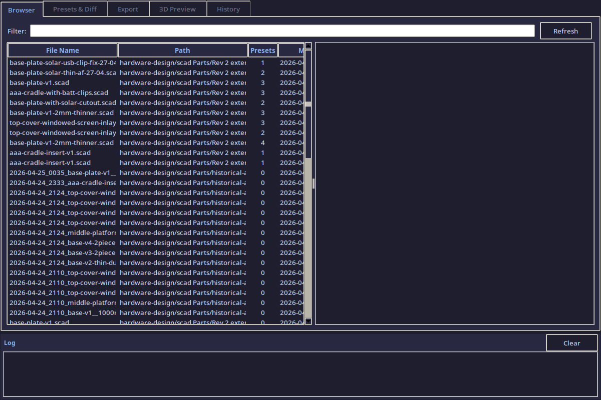
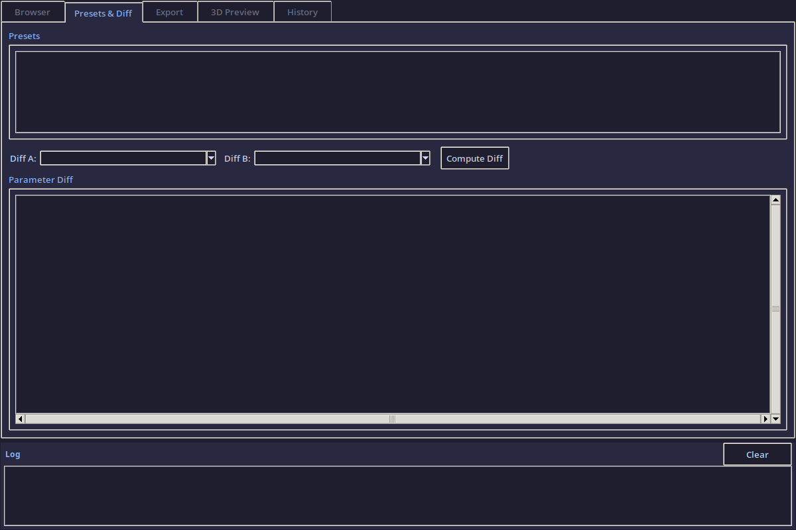
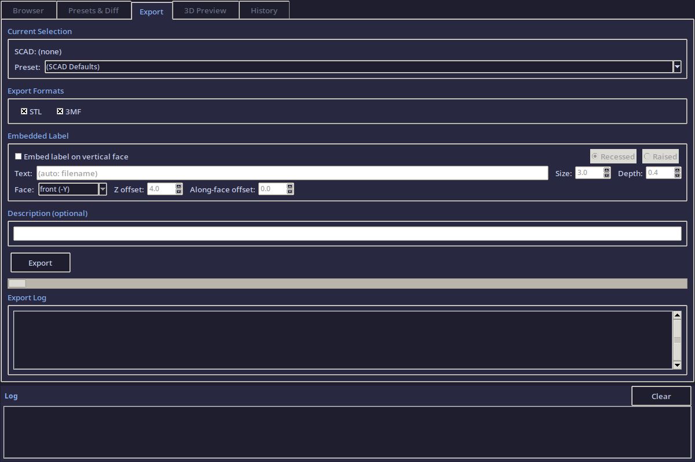
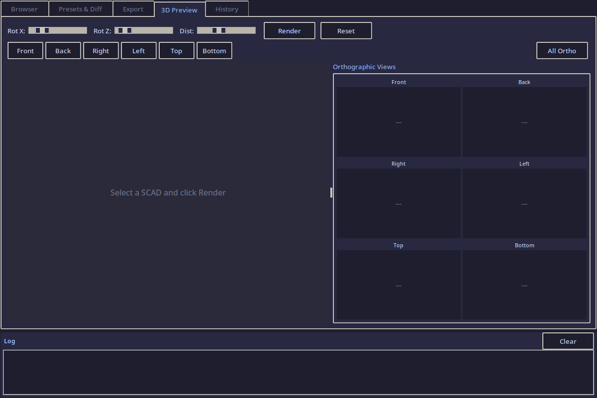
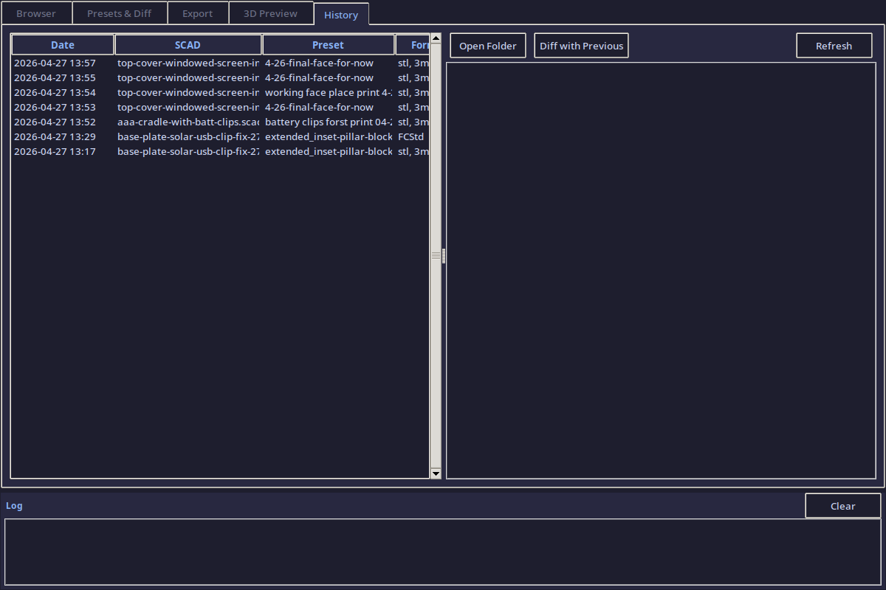

DesignTool — SCAD Design Management Companion¶
A Tkinter GUI for managing OpenSCAD hardware design files: browsing SCAD files and presets, diffing parameters, exporting to STL/3MF, 3D preview with orthographic views, and tracking the full export history.
Usage¶
Tab 1 — Browser¶
Browse all .scad files in the hardware-design/scad Parts/ directory. Select a file to see its parameters, presets, and source code preview.

Features¶
- Search bar filters files by name in real time
- File tree lists all
.scadfiles found recursively - Detail panel shows file path, parameter count, preset count, and file size
- Parameter table displays all top-level SCAD variables with their default values
- Selecting a file auto-loads its companion
.jsonpreset file (if present)
Tab 2 — Presets & Diff¶
Compare any two presets side-by-side to see exactly which parameters changed between design iterations.

Features¶
- Preset list loads from the SCAD file's companion JSON
- Diff view compares two presets (or a preset against the SCAD defaults)
- Color-coded diff: changed (yellow), added (green), removed (red), unchanged (dim)
- Diff export to markdown for documentation
Tab 3 — Export¶
Export a SCAD file with a specific preset to STL, 3MF, or both. Includes embedded labeling and automatic description generation.

Features¶
- Format selection: STL, 3MF, or both
- Embedded label: optional text/date stamp baked into the export filename
- Description: auto-generated markdown documenting the export parameters vs defaults
- Export log: real-time output from the OpenSCAD CLI (
openscadoropenscad-nightly) - All exports saved to
tools/designtool/exports/with timestamped filenames
Tab 4 — 3D Preview¶
Render a live 3D preview of the selected SCAD file + preset using the OpenSCAD CLI.

Features¶
- Live preview: renders the current SCAD + preset to a PNG via
openscad --render --camera - Orthographic views: one-click buttons for Front, Back, Right, Left, Top, Bottom
- Default isometric: 55/0/25 degree camera angle at distance 200
- Quick render: low-res preview for fast iteration
- Full render: high-res output for documentation
Tab 5 — History¶
Full audit trail of every export — what was exported, when, with which parameters, and where the files went.

Features¶
- History list: every export logged to
history.jsonwith timestamp - Detail panel: shows the SCAD file, preset name, exported formats, and output paths
- Parameter snapshot: the exact parameter values used for each export (for reproducibility)
- Re-export: one-click to re-run a previous export with the same settings
Architecture¶
tools/designtool/
├── designtool.py ← main application (1500+ lines)
├── exports/ ← exported STL/3MF files + descriptions
└── history.json ← full export audit trail
Class structure¶
| Class | Purpose |
|---|---|
DilderDesignTool |
Main Tk window, theme, notebook, log panel |
ScadBrowserTab |
SCAD file discovery + parameter parsing |
PresetManagerTab |
Preset loading + parameter diffing |
ExportTab |
OpenSCAD CLI export with labeling |
PreviewTab |
3D render via OpenSCAD --camera |
HistoryTab |
Export audit trail viewer |
Theme¶
Catppuccin Mocha color scheme — matches the DevTool for visual consistency.
| Element | Color |
|---|---|
| Background | #1e1e2e |
| Panel | #282840 |
| Text | #cdd6f4 |
| Accent | #89b4fa |
| Green | #a6e3a1 |
| Yellow | #f9e2af |
| Red | #f38ba8 |
Requirements¶
- Python 3.9+ with Tkinter
- OpenSCAD (for preview and export)
Source: tools/designtool/designtool.py